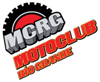

|
Reglamento de la Vuelta a Tierra del Fuego


21, 22 y 23 DE ABRIL DE 2011
(Reglamento de ediciones
anteriores)
I-
De la
Organización.
El Moto Club
Río Grande, con el auspicio de la Municipalidad de Río Grande, a
través de la Agencia Municipal de Deportes y Juventud, organiza la
XXVI Edición de la competencia motociclística denominada ¨Vuelta a
la Tierra del Fuego¨, a realizarse los días 09, 10 y 11 de abril de
2009.
II-
De la
Fiscalización.
La competencia será
fiscalizada en su totalidad por el Moto Club Río Grande.
III- Del
Evento.
A)
La competencia constará de DOS (2)
etapas divididas cada una de ellas en cuatro pruebas especiales.
B)
Los competidores deberán arribar al
final de cada una de las P.E. dentro del tiempo máximo estipulado
para el sector, si no lo hicieren se los excluirán de la etapa.
C)
Los competidores que hayan sido
excluidos, hayan sufrido rotura del motovehículo o no hayan
ingresado en término a los puestos de control, podrán
reengancharse para disputar la segunda etapa, engrillando al
final detrás del último clasificado y competirán por la Etapa pero
no por la clasificación general.
IV- De las
Aptitudes Físicas.
A)
Se adjunta al presente Ficha Médica
Deportiva en la que deberán completar como mínimo los siguientes
ítems: Examen Bioquímico de rutina, Radiografía de Tórax,
Electrocardiograma y Examen Visual. Al pie el médico tratante deberá
certificar en forma clara e inequívoca si el paciente se encuentra
APTO O NO PARA LA PRÁCTICA DE EVENTOS DEPORTIVOS DE ALTA EXIGENCIA
FÍSICA. En todos los casos deberán presentar la Radiografía de
Tórax, el Electrocardiograma y los Análisis bioquímicos
correspondientes, consignando grupo sanguíneo y factor. Los pilotos
radicados en la ciudad de Río Grande, tendrán plazo para
cumplimentar este requisito el 01 de abril inclusive.
B)
Los pilotos que no sean de la ciudad de
Río Grande y que no posean Licencia Deportiva en vigencia, deberán
bajar de Internet la Ficha Médica que deberán presentar completa al
momento de realizar la verificación Técnico-Administrativa. También
deberán presentar la placa radiográfica, el electrocardiograma y los
análisis bioquímicos que se exigen. Para estos casos, el plazo de
presentación de la presente documentación se extenderá hasta las
13hs. Del día 09 de abril.
C)
Se aceptarán las Licencias Médicas
expedidas por clubes o federaciones habilitadas, sean nacionales o
internacionales para los pilotos en actividad.
D)
Los pilotos que no cumplimenten estos
requisitos, no podrán ser de la partida sin excepción, y no se les
reintegrará lo que hubieren abonado de inscripción ni cualquier otro
gasto o costo que reclamen.
V- De las
Inscripciones.
A) Las pre-inscripciones
serán vía INTERNET desde el 16 de Marzo y hasta el 30 de Marzo,
hasta las 21hs. a un costo de pesos doscientos ($200) a través de la
pagina web
www.mcrg.com.ar o solicitarla a la
dirección de correo electrónico
motoclubriogrande@gmail.com . La pre
inscripción deberá estar con todos los datos solicitados y ser
enviada a la fecha y horas indicadas, esperando la confirmación de
recibida y sujeta a revisión y aprobación de la Comisión Directiva.
B) A partir del
día 30 de marzo, pasado el plazo de cierre no se recibirán pre-inscripciones.
Para algún caso en particular los organizadores se reservan el
derecho de aceptar o no posteriores pre inscripciones.-
C) Las
Inscripciones comenzaran el día Lunes 30 de Marzo de 2009. En Rio
Grande en la sede del Moto Club Rio Grande, sita el Arturo Illia 864
Edificio 4 “B” planta baja “B”, en Ushuaia en el comercio HZ MOTOR
SHOP, sito el calle Goleta Florencia 2045 (Tel. 02901-437607) y en
Tolhuin en el Domicilio del Sr. Emilio Legue, sito en Julio
Leguizamón 343 (Tel. 02964 15478130), en el horario de 19.00 Hs. a
21.00 Hs. La misma tendrá un costo de $ 200 (doscientos pesos)
D) El cierre de
Inscripciones será el día 1º de Abril de 2009 inclusive en el
horario estipulado. Pasada esa fecha podrán inscribirse y solo hasta
el día 3 de Abril pero a un costo de $ 400 (cuatrocientos pesos).
Luego de ello NO SE ACEPTARAN INSCRIPCIONES. Únicamente para casos
que fueran debidamente justificados la Organización se reserva el
derecho de aceptar o no posteriores inscripciones solo hasta el día
7 de Abril, a un costo de $800 (pesos ochocientos). Los primeros 160
(CIENTO SESENTA) PILOTOS INSCRIPTOS, serán bonificados con la
cobertura médica. Pasado ese número deberán hacerse cargo de la
cobertura médica a un costo de $ 180 (ciento ochenta pesos) por
piloto.-
E) Para
aquellos que no residan en nuestra provincia, se tomará como fecha
la de la pre-inscripción, debiendo abonar indefectiblemente vía
depósito bancario en la siguiente CUENTA CORRIENTE EN PESOS: BANCO
FRANCES SUCURSAL RIO GRANDE Nº 228-20-001611/7 A NOMBRE DEL MOTO
CLUB RIO GRANDE, antes de las fechas límites descriptas en los
puntos anteriores. Para ello se deberá enviar vía e-mail a la
dirección
cliendro@hotmail.com o vía fax al Tel.
02964-430548 los comprobantes del depósito correspondiente. NO SE
DARAN COMO VALIDAS LAS PRE INSCRIPCIONES QUE NO JUSTIFIQUEN EL
DEPOSITO HECHO EN TIEMPO Y FORMA. Independientemente de esta
obligación, deberán traer el comprobante original del depósito. Ante
cualquier consulta referente al tema consultar al Tel. 02964
15466101 o 02964 15418052.
F) Para los
pilotos que residan fuera de nuestra provincia deberán enviar la
ficha de Inscripción vía correo electrónico o por cualquier otro
medio y se recibirán a modo de pre-inscripción, hasta que se
justifique el depósito del monto de inscripción correspondiente.-
G) Los menores de
18 años de edad al momento de iniciar la previa administrativa (9 de
Abril de 2009) deberán presentar una autorización para competir,
firmada por ambos padres, tutores o encargados, ante un ente oficial
(policía, escribano, juez, etc)
H) Al
inscribirse, cada piloto deberá traer los datos del Auxilio que lo
va a asistir a lo largo de la competencia, siendo estos los únicos
que estarán autorizados a los ingresos a parque cerrado en cada
prime. Para ello deberán presentar por escrito Apellido y Nombre del
Auxilio y patente del vehículo que lo va a asistir.-
VI- De las
Categorías.
Cuatriciclos.
ATV Pro A
(pilotos expertos mayores de 19 años, libre cilindrada).
ATV Pro B
(pilotos de 19 años en adelante con poca experiencia, libre
cilindrada).
ATV Promocional
(de 14 a 18 años, libre cilindrada).
ATV Limitado
(hasta 350c.c. 4 tiempos y 200c.c. 2 tiempos).
ATV 4X4 (doble
tracción).
ATV Damas.
ATV Máster
(Pilotos mayores de 40 años, Libre Cilindrada)
Motos.
Moto Senior
(pilotos expertos, libre edad y libre cilindrada).
Moto Junior
(pilotos entre 14 y 29 años, libre cilindrada).
Moto
Promocional (sin experiencia comprobable, libre edad, libre
cilindrada).
Moto Master A
(pilotos entre 30 y 39 años, libre cilindrada).
Moto Master B
(pilotos mayores de 40 años, libre cilindrada).
Importante:
Edad mínima 14 años cumplidos al momento de la carrera.
La Comisión
Organizadora, será responsable de determinar la participación del
piloto en las categorías PROMOCIONALES.
Se exigirá un
mínimo de SEIS (6) pilotos para conformar una categoría y deberán
estar presentes en el parque cerrado previo a la competencia para
convalidar dicha categoría. En el supuesto caso que no llegue al
mínimo requerido se anulará dicha categoría y los pilotos que se
hubieren inscripto tendrán la opción de participar en la categoría
inmediata superior, caso contrario NO FORMARAN PARTE DE LA
COMPETENCIA. Únicamente para estos casos, los organizadores
reintegrarán a dichos pilotos el importe abonado en concepto de
inscripción, no reconociéndose ningún otro gasto que el piloto
hubiese realizado a fin de participar en la competencia.
La organización
dispone de 120 (ciento veinte) plazas para alojamientos para los
pilotos que no residan en nuestra provincia, para las ciudades de
Rio Grande y otras para la ciudad de Ushuaia. Se las reservara a las
primeras 120 personas que las soliciten. Para ello deberán acercar
los siguientes datos: APELLIDO Y NOMBRES COMPLETOS, DNI y FECHA DE
NACIMIENTO. Se tomara un máximo de 3 (tres) reservas por piloto
inscripto hasta completar el cupo
VII- De la
Previa de la Carrera.
Jueves 09 de
abril.
Lugar PARQUE DE
LA VELOCIDAD (Kartodromo de la ciudad de Rio Grande)
13.00 Hs.
Apertura de parque cerrado.
Verificación
Técnica-Administrativa obligatoria.
Entrega de números.
Precintado de
motores de las categorías limitadas
Verificación de
seguridad de las maquinas
Verificación de
equipo de seguridad del piloto
17.30 Hs.
Cierre del parque cerrado.
17.45 Hs.
Reunión de pilotos de carácter obligatoria.
18.00 Hs.
Largada simbólica y exhibición. Carácter obligatorio.
VIII-
Generalidades de la Competencia.
El orden de la
largada será por categorías y las grillas se establecerán de acuerdo
a la clasificación correspondiente a la edición 2008.
Quienes no hayan
participado, serán incluidos de acuerdo al orden de inscripción.
IX- De la
Competencia.
Jueves 09 de
abril: Largada Simbólica.
Viernes 10 de
abril: Primera Etapa (Río Grande – Tolhuin - Ushuaia)
Sábado 11 de
abril: Segunda Etapa (Ushuaia – Tolhuin - Río Grande)
Sábado 11 de
abril 21 Hs.: Premiación.
Viernes 10 de
abril de 2009.
Lugar:
AUTODROMO CIUDAD DE RIO GRANDE.
07.00 Hs.
Apertura del parque cerrado.
07.30 Hs.
Cierre del parque cerrado.
07.45 Hs.
Engrillado previo. Ceremonia de inicio.
08.30 Hs.
Inicio de la Competencia.
PRIMERA
ETAPA:
P.E. Nº1
08.30 HS. Río Grande/ Zona Km 2900.
Tiempo máximo del Sector 01:35:00 Hs.
P.E. Nº2
10.45 HS. Zona Km 2901/ Tolhuin.
Tiempo máximo del Sector 01:35:00 Hs.
P.E. Nº 3
13.00 HS. Cabecera Lago Fagnano / Aserradero Bronzovich.
Tiempo máximo del Sector 02:15:00 Hs.
P.E. Nº 4
15.45 HS. Mirador Lago Escondido/ Río Olivia.
Tiempo máximo del Sector 02:15:00 Hs.
18.00 HS. FIN DE LA PRIMERA ETAPA.
Sábado 11 de
abril de 2009.
Lugar:
PUENTE RIO OLIVIA.
06.45 Hs.
Apertura de parque cerrado para reenganchados.-
07.00 Hs.
Cierre de parque cerrado de reenganchados - Apertura del parque
cerrado General
07.30 Hs.
Cierre del parque cerrado.
07.35 Hs.
Engrillado previo.
08.30 Hs.
Inicio de la 2º Etapa.
SEGUNDA
ETAPA:
P.E. Nº 5
08.30 HS. Río Olivia/ Km. 3010
Tiempo máximo del Sector 02:15:00 Hs.
P.E. Nº 6
11.30 HS. Aserradero Bronzovich / Cabecera Lago Fagnano.
Tiempo máximo del Sector 02:15:00 Hs.
P.E. Nº 7
14.20 HS. Tolhuin/ Zona Km 2901.
Tiempo máximo del Sector 01:35:00 Hs.
P.E. Nº 8
16.25 HS. Zona Km 2900/ Río Grande.
Tiempo máximo del Sector 01:35:00 Hs.
18.00 HS. FIN DE LA COMPETENCIA.
X- De las
Asistencias en Carrera.
A) Los
vehículos de auxilio deberán estar debidamente identificados con el
número correspondiente al o a los pilotos a los cuales asista, como
así también se deberá presentar al momento de la entrega de la calco
identificatoria los datos del vehiculo afectado como los del
responsable de conducirlo y el equipo de asistencia. Los auxilios
deberán permanecer en los lugares predeterminados demarcados en el
final de cada P.E. con un disco con el número del prime terminado,
al principio y al final del parque de asistencia. Nunca sobre la
cinta asfaltica, procurando no entorpecer el normal desarrollo de la
competencia y respetando las normas de tránsito. La no observancia
de estas normas será causal de sanción al piloto. La Policía contara
de cámaras fotográficas para los que cometan infracciones de
transito o incurran en algún acto de inconducta. El control de
Alcoholemia se realizara en el momento que el Comisario Deportivo
y/o autoridades de seguridad lo requieran, como también a los
auxilios declarados.
B) Ningún
piloto podrá ser remolcado y/o transportado durante el desarrollo de
la competencia bajo pena de exclusión. Solamente podrá ser asistido
para salir de la emergencia y luego deberá desplazarse por sus
propios medios.-
C) Al momento
de ser asistido por terceros a fin de sortear los obstáculos, el
piloto deberá mantener ambos manos en el manubrio, es decir que el
vehículo NO PODRÁ SER CONDUCIDO por personal de su equipo o
eventuales asistentes, en el caso de incurrir en esta infracción se
lo sancionará con descuentos de puntos.-
XI- De la
Demarcación.
El trazado de
la ruta se encuentra demarcado con banderines, cintas y discos con
el siguiente significado:
BANDERINES
CELESTES:
Indican la
orientación. Los mismos están ubicados en la primera etapa siempre a
la izquierda del piloto. Indican que desde este hacia la derecha el
sendero es de libre circulación. En la segunda etapa quedaran a la
derecha, indicando que desde este a la izquierda es de libre
circulación.
BANDERINES
CELESTES Y BANDERINES ROJOS:
Indican PUERTAS
y son de PASO OBLIGATORIO. No respetar estas puertas será
penalizado.
DISCOS ROJOS:
Indican ZONAS
PELIGROSAS. (Cortes, saltos, desniveles ocultos, etc) extremar la
precaución.
DISCOS ROJOS
NUMERADOS:
Indican puesto
de control visual, en el cual el piloto deberá frenar y gritar su
número.
CINTAS O
MALLAS:
Colocadas para
guiar la circulación obligatoria. Se penalizará a quien las corte.
A la finalización de cada prueba especial, se armara una manga y
quien corte o tire la cinta o una estaca, será penalizado.
XII – De las Penalidades.
A)
A lo largo del recorrido la Organización
de la prueba dispondrá de veedores identificados y no identificados,
los que informarán al Comisario Deportivo de cualquier conducta
antideportiva o impropia que desarrollen los competidores o
integrantes de su equipo de asistencia.-
B)
La llegada tarde a parque cerrado se
penalizará con el descuento 4 puntos por minuto y este recargo será
restado de la Clasificación por Etapa.-
C)
Esta terminantemente prohibido circular
por la banquina de la Ruta Nacional Nº3 y/o asfalto de la misma,
excepto en los lugares obligatorios, los que estarán debidamente
señalizados. Si se observasen pilotos circulando por los lugares
indebidos o no señalizados serán penalizados, a instancia de los
informes de los veedores que dispondrá la Organización, de la
siguiente manera: 1º infracción: Descuento de 20 puntos. 2º
infracción: Descuento de 40 puntos. 3º infracción: Exclusión de la
competencia.-
D)
Se considerarán infracciones y se
sancionarán como tales los siguientes hechos: Adelantamiento en las
largadas; No atender las indicaciones del Comisario Deportivo y/o
Autoridades de la Prueba; Interferir en las labores del personal de
Cronometraje; Falta de identificación del vehículo de auxilio;
conducta impropia de los integrantes de su equipo de auxilio.-
E)
Las penalidades serán determinadas por
la Comisión Organizadora e irán desde el descuento de puntos en la
Clasificación, hasta la desclasificación instantánea del competidor.
Estas dediciones serán inapelables.-
F)
La no presentación en la Previa
Técnica-Administrativa tendrá un descuento de 50 puntos en la
Clasificación General.-
G)
La no participación del Superprime
tendrá un descuento de 50 puntos en la Clasificación General.
H)
Se penalizará con el descuento de 50
puntos en la etapa, a aquellos pilotos que no hayan cruzado por las
puertas de paso obligatorias.-
I)
Se penalizara con exclusión directa de
la competencia a aquellos pilotos que no pasen por los CONTROLES DE
PASO OBLIGATORIOS.-
J)
Toda pena no descripta
será evaluada al momento por las Autoridades de la Prueba.-
XIII – Del Cronometraje.
A)
Los pilotos deberán facilitar las tareas
del equipo de cronometraje, siendo responsables de la visibilidad de
sus respectivos números de máquina al momento de pasar por el puesto
de toma de tiempos y de decir a viva voz su número de máquina. SI EL
EQUIPO DE CRONOMETRAJE NO PUDIESE IDENTIFICAR AL PILOTO QUE PASO POR
EL TOMA TIEMPO, SE LO TENDRA POR NO ARRIBADO, NO HABIENDO DERECHO A
RECLAMO ALGUNO.-
B)
La Clasificación se dará a conocer a los
participantes al final de la Primera Etapa, alrededor de las 20 Hs.
en lugar a confirmar, en tanto que los de la Segunda Etapa se darán
a conocer al momento de la entrega de premios.-
C)
Los reclamos y/o dudas que puedan surgir
al respecto, deberán ser dirigidas por escrito al Comisario
Deportivo.-
D)
Los cuatriciclos deberán tener
obligatoriamente un porta número trasero para facilitar la labor de
cronometraje.-
E)
Los pilotos que hagan abandono en la
primera etapa, deberán OBLIGATORIAMENTE notificarlo a los jefes de
veedores y/o a los comisarios Deportivos, caso contrario NO PODRAN
REENGANCHARSE PARA LA SEGUNDA ETAPA.
XIV - Del Sistema de
Cronometraje y premiación
A)
El inicio de la competencia se largara
por categoría, en un solo banderazo, con 20” (veinte segundos) de
diferencia entre categoría y categoría. Las grillas se armaran de
acuerdo al ranking de la edición anterior.-
B)
El Orden la largada de las categorías
será el siguiente: 1º Grilla – Motos Seniors, 2º Grilla – ATV PRO A,
3º Grilla - Moto Junior, 4º Grilla - Moto Master A, 5º Grilla - ATV
PRO B, 6º Grilla - ATV LIMITADO, 7º Grilla - Moto Master B, 8º
Grilla - Moto Promocional, 9º Grilla - ATV Promocional, 10º Grilla -
ATV MASTER, 11º Grilla - ATV Damas y 12º Grilla - ATV 4X4.
Luego de la inscripción La
organización podrá agrupar 2 o mas categorías en una misma grilla de
largada de acuerdo a la cantidad de inscriptos.-
C)
A partir del 2º prime se ordenara POR
ORDEN DE LLEGADA, EN GRILLAS DE 4 PILOTOS y largaran con 15” de
diferencia entre grilla y grilla. Para ello al termino de cada prime
se le entregara al piloto un papel identificando la grilla de salida
del prime siguiente que le corresponde. Asimismo en cada prime
estarán bien identificadas cada una de las grillas para que cada
piloto tome su posición con la suficiente antelación.-
D)
Cada Etapa y la General se definirá por
PUNTOS. El sistema de puntuación será el siguiente por cada Prime 1º
100 Pts., 2º 94 Pts., 3º 90 Pts., 4º 86 Pts., 5º 82 Pts., 6º 78
Pts., 7º 74 Pts., 8º 70 Pts., 9º 66 Pts., 10º 62 Pts., 11º 58 Pts.,
12º 54 Pts., 13º 50 Pts., 14º 46 Pts., 15º 42 Pts., 16º 38 Pts., 17º
34 Pts., 18º 30 Pts., 19º 26 Pts., 20º 22 Pts., 21º 18 Pts., 22º 16
Pts., 23º 14 Pts., 24º 12 Pts., 25º 10 Pts., 26º 8 Pts., 27º 6 Pts.,
28º 4 Pts., 29º 2 Pts. y 30º 1 punto. En caso de que la categoría
supere las 30 unidades, se puntuara el resto de las posiciones con 1
punto por piloto. Para el caso de igualdad de puntos para definir
posiciones en las etapas o en la general, se definirá por el tiempo
obtenido
XV – De los Controles de
paso Obligatorios
A diferencia de las PUERTAS DE
PASO OBLIGATORIAS, la organización dispuso 4 (cuatro) CONTROLES DE
PASO OBLIGATORIOS, los cuales estarán colocados en los siguientes
lugares:
CONTROL DE PASO 1: P.E. Nº 3
Salida del Ramón
CONTROL DE PASO 2: P.E. Nº 4
Salida de la Pared
CONTROL DE PASO 3: P.E. Nº 5
Km. 3014 en el Ingreso al Lagrimón
CONTROL DE PASO 4: P.E. Nº 6
Ingreso al Ramón
Para estas puertas de Controles
de paso, se aplicara el mismo criterio que en las llegadas de cada
prime. El piloto deberá limpiar su número y al pasar por el veedor
que disponga la organización, deberá decir a viva voz su número de
máquina. El piloto deberá estar completamente seguro de que el
veedor pudo identificarlo ya que de no ser así se lo tendrá como no
pasado y será excluido automáticamente de la competencia.-
XV – De las Denuncias o
Reclamos
Sólo se aceptarán denuncias de
los pilotos inscriptos y en competencia, referentes a hechos de
carrera, previo depósito de la suma de PESOS QUINIENTOS ($
500,00.-), por escrito y hasta 30 minutos después del final de cada
etapa y dirigidas al Comisario Deportivo de la prueba.-
En el caso que la protesta
prosperase, se procederá a la devolución del dinero al piloto que
haya efectuado la denuncia. Si la queja no prosperase o no fuera
aceptada, no se devolverá el depósito. Esta medida será inapelable.-
XVI – De las publicidades
Sin perjuicio de los sponsors
y/o publicidades de cada piloto, será obligatoria la exhibición de
los Sponsors y/o publicidades que disponga la organización, en los
lugares que esta designe, pudiendo ser en la indumentaria personal
y/o maquina, NO debiendo SER TAPADAS, SACADAS Y/O ALTERADAS bajo
ningún concepto. Quien incurra en este tipo de faltas y se negase a
rectificarlo, automáticamente dejara de ser parte de la competencia,
a instancias de las autoridades de la prueba.-
XVII – De la Revisión
Técnica Obligatoria.
Al finalizar la competencia
serán revisados los motores de los participantes de la Categoría
Limitada . Cada piloto puede, a su cargo, poner un mecánico de su
confianza para supervisar dicha inspección, pero la decisión final
la tendrá el Comisario Técnico Oficial y esta será inapelable.-
Cualquier anomalía detectada
determinará la desclasificación inmediata del competidor. Si un
piloto se negase a cumplimentar el trámite será automáticamente
desclasificado.
En el supuesto que se
desclasifique a un competidor, se procederá a la revisión del 4º
lugar y así sucesivamente.
Los costos que eventualmente
surjan de esta verificación, serán absorbidos por el piloto en su
totalidad.-
XVIII – De la Premiación.
Se premiará con trofeos según
el siguiente detalle:
PRIMERA ETAPA: 1º, 2º
y 3º puesto de cada categoría.-
SEGUNDA ETAPA: 1º, 2º
y 3º puesto de cada categoría.-
CLASIFICACION GENERAL:
1º al 6º de cada categoría.-
DISTINCION A CADA
PARTICIPANTE
XIX- De la Cena de
Premiación.
Con la inscripción, cada piloto
obtiene una entrada para si mismo y dos acompañantes a fin de
participar en la cena de premiación, la cual se realizará el Sábado
11 de abril en el anexo del Polideportivo Carlos Margalot, a partir
de las 21.00 Hs. La entrada le será solicitada al ingreso al predio
y sin su presentación NO PODRÁN INGRESAR.
XX – De la Seguridad.
Esta competencia contará con un
Seguro Contra Terceros y una Cobertura Médica para los pilotos. AAV:
Asociación Argentina de Volantes.
XXI – De la Organización.
Cada participante por el solo
hecho de inscribirse declara que su participación es voluntaria y
acepta conocer el presente Reglamento y cada una de las pautas aquí
descriptas, por lo que se somete íntegramente a las mismas.
Los organizadores se reservan
el derecho de modificar total o parcialmente el presente reglamento.
Dichas modificaciones serán anunciadas mediante anexos
reglamentarios y en la charla previa a la largada.
EL MOTO CLUB RIO GRANDE, la
AGENCIA MUNICIPAL DE DEPORTES Y JUVENTUD, la Municipalidad de Río
Grande y las autoridades de la prueba, no serán responsables ante
cualquier caso de accidente que pudiera ocurrir o que pudiera ser
causado por cualquier participante de la prueba.-
XXII – Autoridades de la
Prueba.
Director de la prueba
Marcelo F. Giraudo
Comisarios
Deportivos Gerónimo
Milovic
Avalos Alberto.
Comisario Técnico
Hugo Hernández.
Responsable del Trazado
Luis Hernández.
Héctor Mercau
Responsable del Barrido
Defensa Civil Río Grande
Responsable del Cronometraje
Omar Cores
Responsable del Cuerpo de
Veedores Raúl Felicito
Sergio Arias.
Responsable de Seguridad y
Transito Defensa Civil Rio Grande, Tolhuin
y Ushuaia.
Asociación Bomberos Voluntarios 2 de abril (Ushuaia)
Bomberos Voluntarios de Tolhuin.
Encargado de engrillado
Sebastián Uribe
Claudio Jerez
Responsable Coordinación y
Comunicaciones Defensa Civil Provincial.
Prensa y Difusión
Pablo De
Girolmo.
Cobertura Médica
Rodrigo Díaz
y AAV.
Cortes de ruta
Policía Provincial y Gendarmería Nacional.
|

 Powered by
Powered by